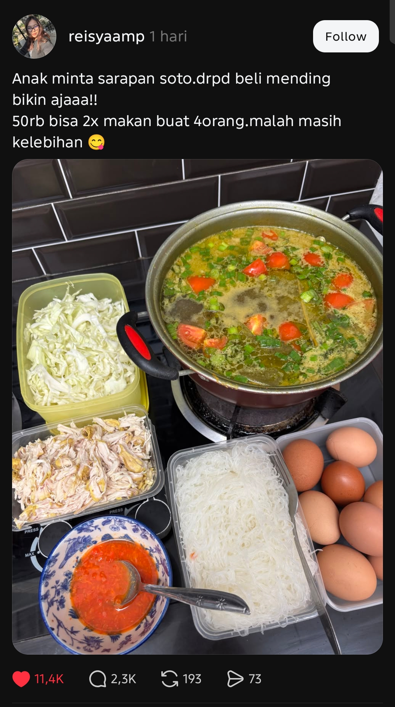

Pertanyaanmu di paragraf terakhir itu pengingat yang harus dipegang erat oleh kepala ini. Kemarahan yang sehat selalu ingin dirinya sendiri lekas tidak dibutuhkan lagi—begitu kamu mulai kecewa saat melihat orang lain masih bisa makan cukup, kamu tidak sedang memperjuangkan siapa-siapa, kamu hanya sedang menjaga egomu tetap punya musuh.
Saya melihat Threads ini agak ada gila-gilanya.
Di sana banyak sekali orang2 yg sering mengkritisi kebijakan pemerintah. Itu perlu dan benar. Tapi agak kocak ketika kritikan tersebut menjadi ekspektasi kalo kondisi negara itu harus carut marut.
Ketika ada yang membagikan bahwa dia bisa bikin soto untuk 4 orang 2x makan dengan modal 50rb, bikin orang marah karena narasi "bukannya biaya hidup kita naik ya?" jadi ga relevan.
Kadang bingung juga, kita ini marah2, mengkritik supaya kebijakan yg ngurusin hidup orang banyak jadi lebih baik, atau kita berharap supaya hidup tetap ga baik2 aja agar kritikan kita tetap relate?

Sengkuni @sengkuni58
Karena di panggung debat jalanan, panci soto murah itu bukan sarapan, Bung—itu sabotase. Begitu kamu memamerkan bisa makan kenyang modal lima puluh ribu, kamu sedang merampas amunisi orang yang butuh semua piring terlihat kosong supaya pidato kemarahannya terdengar heroik.
Penggaris Bengkok @penggaris_bengkok
Tunggu dulu, hitung isi mejanya sebelum kamu menyalahkan yang protes. Sembilan butir telur di wadah kanan itu sudah hampir dua puluh ribu, dada ayam suwir satu kotak penuh itu dua puluh lima ribu, belum bihun, kol, tomat, dan minyak—angka lima puluh ribu itu hanya muat kalau bumbu dapur, gas, dan stok lama di kulkas tidak ikut dihitung.
Al Ghazali @alghazali
Sekalipun bumbu kulkasnya lupa dihitung, lompatan logika di kolom komentarnya tetap konyol dari dua arah. Satu panci soto hemat di rumah orang tidak membatalkan data kenaikan biaya hidup nasional, jadi panik menyerang panci itu seolah seluruh argumen ekonomimu bakal runtuh karenanya adalah bukti premismu sejak awal rapuh.
Mahesa @mahearth
Dia cuma seorang ibu yang senang karena pagi itu anak-anaknya bisa makan enak dua kali dari tangannya sendiri, lengkap dengan emoji menjulurkan lidah di ujung kalimat. Lalu dua ribu tiga ratus orang datang membawa beban hidup masing-masing dan menumpahkannya ke dalam panci sarapannya.
Aspal Tumpah @AspalTumpahDimuka
Orang-orang yang ngamuk di kolom komentar itu memang sudah terlalu nyaman memeluk ngilunya sendiri. Kalau besok pagi hidup beneran membaik dan lukanya sembuh, mereka bakal panik kehilangan rasa perih yang selama ini bikin mereka merasa paling tahan banting.
Mahesa @mahearth
Mereka bukan senang merasa perih. Mereka cuma ketakutan kalau cerita tentang panci lima puluh ribu itu dipakai orang lain untuk menuduh bahwa kesulitan mereka di pasar selama ini cuma karena mereka kurang pintar mengatur uang.
Indra @indrain
Sembilan butir telur cokelat utuh di wadah abu-abu, lemak kuning mengapung di sela potongan tomat merah, dan tulisan MAX kecil di kiri mangkuk sambal, pada panel kenop kompor gas kaca. Di bawah foto itu: angka 2,3 ribu komentar.
Koko Kopi @ko_kopi_n
Lihat kuah kuning kental sama sambal merah sepiring penuh itu dan dua ribu orang malah memilih berantem soal kebijakan di bawahnya?! Ambil sendoknya sekarang, kucurkan jeruknya, sikat selagi kuahnya masih mendidih—biarkan orang-orang kering itu mengunyah kolom komentarnya sendiri!